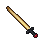
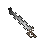

ULTIMA VII ULTIMA ONLINE
Britannia
calls again.
The world of The Black Gate.
The unmistakable feel of Ultima Online.
A single-player return to a world worth getting lost in. Original Ultima VII gameplay, brought to life through ClassicUO.
Browser demo · Bring your Ultima VII folder · No installation
TWO CLASSICS. ONE PERSONAL JOURNEY.
You already know
the way home.
For the Avatar.
Iolo at your side. A murder in Trinsic. A conversation that sends you looking for one more clue. The people, stories and everyday life of Ultima VII are the heart of this project.
The original U7 engine remains in charge of dialogue, schedules, inventory, combat, spell rules and saves.
For the Britannian.
Open your paperdoll. Rummage through a backpack. Equip a weapon, move something into a chest, and keep the map open beside you. The familiar UO interface becomes your window into a single-player adventure.
Your party. Your pace. Your world to return to.
FAMILIAR PLACES, SEEN ANEW
Inside the
Fellowship.
The same hall, seen through two different worlds. Compare the original Ultima VII interior with its ClassicUO presentation, from the gathering space to the familiar details.
The Fellowship hall, captured in our development build.
Explore the public interiors atlasTHE FIRST PLAYABLE CHAPTER
It begins in Trinsic.
A strange dream. A red portal. A town with a terrible secret. Our first slice follows the opening through the murder investigation and departure through the city gate.
- 01
Become the Avatar.
Choose your name and character, then enter the Guardian dream.
- 02
Take the first step yourself.
Wake up and walk into the red portal. Your movement carries you into Trinsic.
- 03
Follow the original mystery.
Talk to the townsfolk, examine the evidence and earn your passage through the gate.
LOOK CLOSER
Every room.
Every little thing.
From the shape of a sword to the furniture in a familiar home, the atlas documents the conversion. Compare U7 originals, ground artwork, paperdolls and room captures.
Explore the asset atlas

Actual review artwork · enlarged for a closer look
YOUR NEXT JOURNEY STARTS HERE
Bring Ultima VII.
Return to Britannia.
Open the Trinsic demo in your browser, select your GOG or Steam Ultima VII folder, and play. The UO data downloads automatically on the first visit. Walk, save, and refresh to return to your saved tile.
Before you begin
- YOUR BROWSERChrome or Edge on a desktop computer
- YOUR U7 COPYEnglish The Black Gate + Forge of Virtue
- FIRST VISITAbout 143 MB of UO data, downloaded automatically
Your Ultima VII files stay on your computer. Downloads and saves are kept in this browser. No Python, UO installation or shard account is needed.
Is this a multiplayer UO shard?
No. Ultima Offline 7 is a single-player project. ClassicUO presents the world and sends your actions to the original U7 engine, which runs the game.
Does it use Ultima VII's original rules?
Yes. The native U7 engine owns the simulation: dialogue, schedules, inventory, combat, spell rules and saves. The project connects those systems to a modified ClassicUO frontend. Presentation and interaction coverage are still being developed and tested.
Can I play the whole game yet?
The current development focus is the opening and Trinsic investigation through the gate. The full campaign and other regions are not ready to be presented as a finished conversion. The roadmap tracks what comes next.
How can I help?
Try the development slice, report what happened and what you expected, or contribute to the source. The atlas is also a place to compare the original artwork and its adaptation. Report an issue on GitHub.